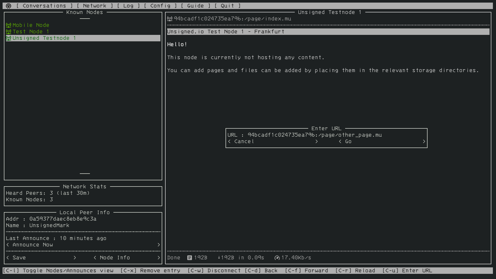
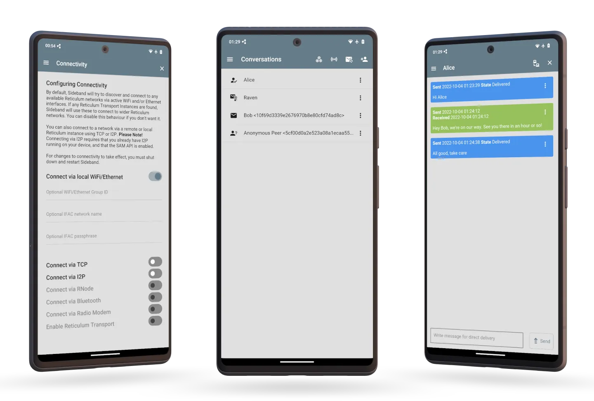
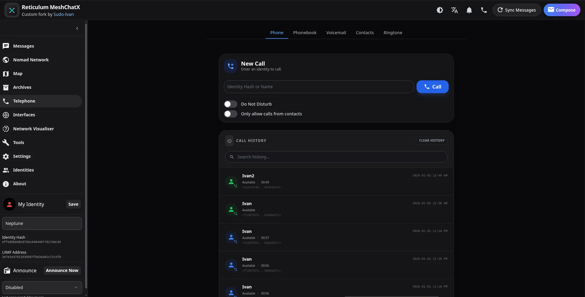
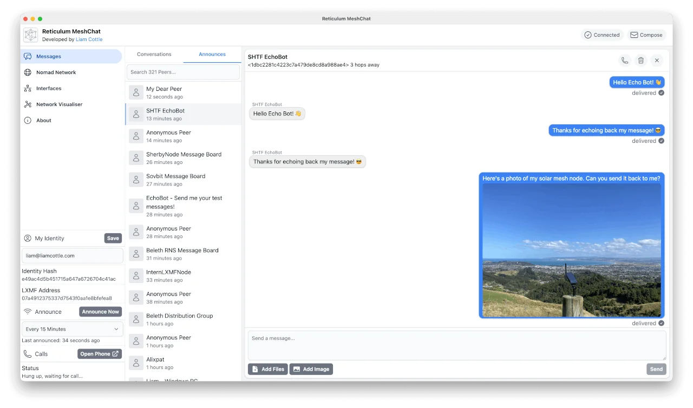
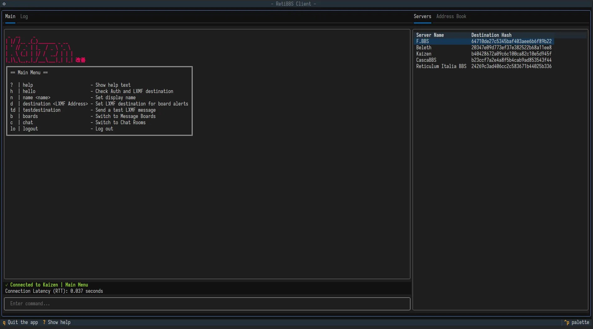
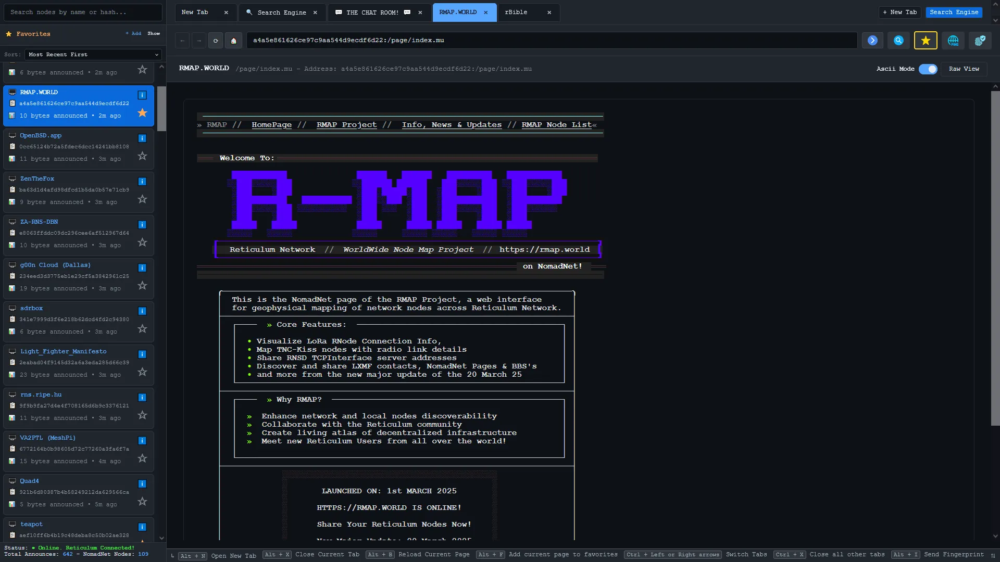
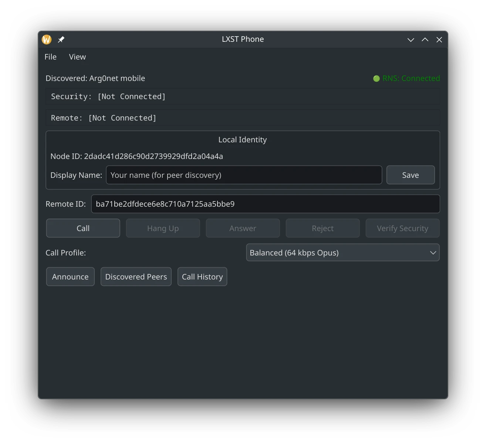

Программы, использующие Reticulum¶
В этой главе представлен неисчерпывающий список известных программ, систем и протоколов прикладного уровня, созданных с использованием Reticulum.
Эти программы позволят вам почувствовать, как работает Reticulum. Большинство из них спроектированы так, чтобы хорошо работать даже в медленных сетях на основе LoRa или пакетной радиосвязи, но все они также могут использоваться на быстрых каналах, таких как локальный WiFi, проводной Ethernet, Интернет или любая их комбинация.
Таким образом, легко начать экспериментировать, без необходимости настраивать какие-либо радиопередатчики или инфраструктуру только для того, чтобы попробовать. Запуска программ на отдельных устройствах, подключённых к одной сети WiFi, достаточно для начала, а физические радиоинтерфейсы можно будет добавить позже.
Программы и утилиты¶
Уже существует множество различных приложений, использующих Reticulum, служащих самым разным целям: от повседневного общения и обмена информацией до системного администрирования и решения сложных сетевых и коммуникационных задач.
Разработка приложений и систем на основе Reticulum продолжается, поэтому рассматривайте этот список как неполную отправную точку с некоторыми из доступных вариантов. Немного поискав, в первую очередь в самом Reticulum, вы найдёте гораздо больше интересного.
Удалённая оболочка (Remote Shell)¶
Программа rnsh
позволяет устанавливать
полностью интерактивные сеансы удалённой оболочки через Reticulum. Она также
позволяет перенаправлять любую программу на удалённую систему или с неё и похожа на
то, как работает ssh. Программа rnsh
очень эффективна и может обеспечивать полностью интерактивные сеансы оболочки даже
на каналах с крайне низкой пропускной способностью, таких как LoRa или пакетная
радиосвязь.
В дополнение к стандартному, полностью интерактивному режиму терминала, для крайне
ограниченных каналов rnsh
предлагает построчно-интерактивный режим, позволяющий вам взаимодействовать с
удалёнными системами, даже когда пропускная способность канала исчисляется
несколькими сотнями бит в секунду.
Nomad Network¶
Терминальная программа Nomad Network предоставляет полный набор средств зашифрованной связи, построенный на Reticulum. Она включает в себя зашифрованный обмен сообщениями (как прямой, так и с отложенной доставкой для офлайн-пользователей), обмен файлами и имеет встроенный текстовый браузер и страничный сервер с поддержкой динамически отображаемых страниц, аутентификации пользователей и многого другого.

Nomad Network — это пользовательский клиент для протокола обмена сообщениями и обмена информацией LXMF.
RNS Page Node¶
RNS Page Node — это простой способ предоставлять страницы и файлы для любого другого клиента, совместимого с Nomad Network. Готовая замена узлам NomadNet, которые в основном служат для размещения страниц и файлов.
Retipedia¶
Вы можете разместить всю Википедию (или любой файл .zim) для
других клиентов Nomad Network, используя Retipedia.
Sideband¶
Если вы предпочитаете использовать клиент LXMF с графическим интерфейсом пользователя, вы можете обратить внимание на Sideband, который доступен для Android, Linux, macOS и Windows. Sideband — это продвинутый клиент LXMF и LXST, а также многоцелевая утилита Reticulum с функциями и возможностями, ориентированными на опытных пользователей.

Sideband позволяет вам общаться с другими людьми или системами, совместимыми с LXMF, по сетям Reticulum, используя LoRa, пакетную радиосвязь, WiFi, I2P, зашифрованные QR-бумажные сообщения или любые другие средства, поддерживаемые Reticulum.
Он также взаимодействует со всеми другими клиентами LXMF и предоставляет расширенные функции, такие как голосовые сообщения, голосовые вызовы в реальном времени, вложения файлов, приватный обмен телеметрией и полноценную систему плагинов для расширяемости.
MeshChatX¶
Reticulum MeshChat — форк из будущего с целью предоставить всё необходимое для Reticulum, LXMF и LXST в одном красивом и многофункциональном приложении. Этот проект отделён от оригинального проекта Reticulum MeshChat и не связан с оригинальным проектом.

Функции включают полную поддержку LXST, пользовательскую голосовую почту, телефонную книгу, обмен контактами и поддержку рингтонов, обработку нескольких идентификаторов, современный UI/UX, офлайн-документацию, расширенные инструменты, архивирование страниц, интегрированные карты, телеметрию и улучшенную безопасность приложений.
MeshChat¶
Приложение Reticulum MeshChat — это удобный клиент LXMF для Linux, macOS и Windows, который также включает браузер страниц Nomad Network и другие интересные функции.

Reticulum MeshChat, конечно же, также совместим с Sideband и Nomad Network, или любым другим клиентом LXMF.
Columba¶
Columba — это простое и знакомое приложение для обмена сообщениями LXMF для Android, созданное с нативным интерфейсом Android и Material Design 3.
Хотя оно всё ещё находится на ранней и очень активной стадии разработки, оно, конечно же, также совместимо со всеми другими клиентами LXMF и позволяет вам беспрепятственно обмениваться сообщениями с любым, кто использует LXMF.
Reticulum Relay Chat¶
Reticulum Relay Chat — это система живого чата, построенная поверх Сетевого Стека Reticulum. Она существует, чтобы люди могли общаться друг с другом в реальном времени через Reticulum, не втягивая в это базы данных сообщений, механизмы синхронизации или архитектурные обязательства, о которых их не просили.
Программа rrcd предоставляет функциональную, эталонную реализацию демона хаб-сервера RRC. Пользовательские клиенты RRC включают rrc-gui и rrc-web.
RRC ближе по духу к IRC, чем к современным «платформам все-в-одном». Вы подключаетесь, заходите в комнату, общаетесь, а затем уходите. Если вы присутствовали, вы видели разговор. Если вас не было, разговор вас не дожидался. Это не случайность. В этом весь замысел.
RetiBBS¶
RetiBBS — это реализация системы электронных досок объявлений для сетей Reticulum.

RetiBBS позволяет пользователям безопасно общаться через доски сообщений.
RBrowser¶
Программа rBrowser — это кроссплатформенный, автономный, веб-браузер для исследования узлов Nomad Network через Сеть Reticulum. Он автоматически обнаруживает узлы NomadNet через сетевые объявления и предоставляет удобный интерфейс для просмотра распределённого контента с поддержкой разметки Micron.

Включает полезные функции, такие как автоматическое прослушивание объявлений, добавление узлов в избранное, просмотр и отображение любых ссылок NomadNet, загрузку файлов с удалённых узлов, уникальную локальную поисковую систему NomadNet и многое другое.
Reticulum Network Telephone¶
Программа rnphone,
включённая в состав пакета LXST,
представляет собой утилиту командной строки и демон телефонии Reticulum, которая
позволяет создавать физические аппаратные телефоны для LXST и Reticulum, а также
просто совершать вызовы через командную строку.
Она поддерживает прямое взаимодействие с аппаратными периферийными устройствами, такими как клавиатуры GPIO и ЖК-дисплеи, предоставляя модульную систему для создания безопасных аппаратных телефонов.
LXST Phone¶
Программа LXST Phone — это кроссплатформенное десктопное приложение для совершения голосовых вызовов LXST через Reticulum.

Она поддерживает различные расширенные функции, такие как верификация SAS, блокировка пиров, ограничение частоты запросов, зашифрованное хранение истории вызовов и управление контактами.
LXMFy¶
LXMFy — это всеобъемлющий и продвинутый фреймворк для создания ботов для LXMF, который позволяет создавать любые виды автоматизации или бот-систем, работающих поверх LXMF и Reticulum. Существуют реализации ботов для управления Home Assistant, интеграций с LLM и различных других целей.
LXMF Interactive Client¶
LXMF Interactive Client — это многофункциональный, терминальный клиент для обмена сообщениями LXMF со множеством продвинутых функций и расширяемой архитектурой плагинов.
RNS FileSync¶
Программа RNS FileSync обеспечивает автоматическую синхронизацию файлов между устройствами без необходимости в центральных серверах, подключении к Интернету или облачных сервисах. Она работает через любую сетевую среду, поддерживаемую Reticulum, включая радио, LoRa, WiFi или Интернет, что делает её идеальной для автономного, ориентированного на конфиденциальность и отказоустойчивого обмена файлами.
Micron Parser JS¶
Micron Parser JS — это парсер на основе JavaScript для языка разметки Micron, который используют большинство веб-браузеров Nomad Network. Если вы хотите создавать утилиты или инструменты, отображающие страницы Micron, эта библиотека необходима.
RNMon¶
RNMon —
это демон мониторинга, предназначенный для отслеживания состояния нескольких
приложений RNS и отправки метрик в экземпляр
InfluxDB по линейному протоколу influx.
[Это позволяет вам затем в реальном времени наблюдать за состоянием и
производительностью вашей Reticulum-ноды через удобные графики и дашборды.]
Протоколы¶
В результате реального использования и тестирования в сообществе Reticulum появился ряд стандартных протоколов. Хотя иногда вы можете захотеть использовать полностью пользовательские протоколы и реализации при написании программного обеспечения на основе Reticulum, использование этих протоколов предоставляет разработчикам приложений простой способ быстро и без усилий реализовать расширенную функциональность. Их использование также обеспечивает совместимость и взаимодействие между множеством различных клиентских приложений, создавая открытую коммуникационную экосистему, где пользователи могут свободно выбирать приложения, соответствующие их потребностям, оставаясь на связи со всеми остальными.
LXMF¶
LXMF — это простой и гибкий формат сообщений и протокол доставки, который позволяет использовать широкий спектр приложений, потребляя как можно меньше пропускной способности. Он предлагает маршрутизацию сообщений без настройки, сквозное шифрование и прямую секретность и может передаваться через любые среды, поддерживаемые Reticulum.
LXMF достаточно эффективен, чтобы доставлять сообщения через системы с крайне низкой пропускной способностью, такие как пакетная радиосвязь или LoRa. Зашифрованные сообщения LXMF также могут быть закодированы в виде QR-кодов или текстовых URI, что позволяет передавать сообщения полностью аналоговым способом на бумаге.
Используя Узлы Распространения, LXMF также предлагает способ хранения и пересылки сообщений пользователям или конечным точкам, которые не доступны напрямую в момент отправки сообщения.
LXST¶
LXST — это простой и гибкий формат потоковой передачи в реальном времени и протокол доставки, который позволяет использовать широкий спектр приложений, потребляя как можно меньше пропускной способности. Он построен поверх Reticulum и предлагает маршрутизацию потоков без настройки, сквозное шифрование и прямую секретность и может передаваться через любые среды, поддерживаемые Reticulum. В настоящее время он обеспечивает работу приложений голосовой связи и телефонии в реальном времени поверх Reticulum.
RRC¶
Протокол Reticulum Relay Chat — это система живого чата, построенная поверх Сетевого Стека Reticulum. Он существует для обеспечения группового общения в режиме, близком к реальному времени, без привнесения баз данных истории сообщений, механизмов федерации или архитектурной вины.
RRC намеренно прост. Он не притворяется электронной почтой, почтовым ящиком или распределённым архивом. Он ведёт себя скорее как разговор в комнате. Если вы там были, вы это слышали. Если нет — не слышали. Это не ошибка, в этом суть.
Модули интерфейсов и ресурсы подключения¶
В этом разделе представлен список различных предоставленных сообществом модулей интерфейсов, руководств и ресурсов для создания сетей Reticulum через специальные или сложные среды.
Пользовательский модуль интерфейса для запуска RNS поверх HTTP
Руководство по запуску Reticulum поверх ICMP с использованием
PipeInterfaceРуководство по запуску Reticulum поверх DNS с Iodine
Руководство по запуску Reticulum поверх КВ-радио
Modem73 — это KISS TNC OFDM-модем, который можно использовать с Reticulum